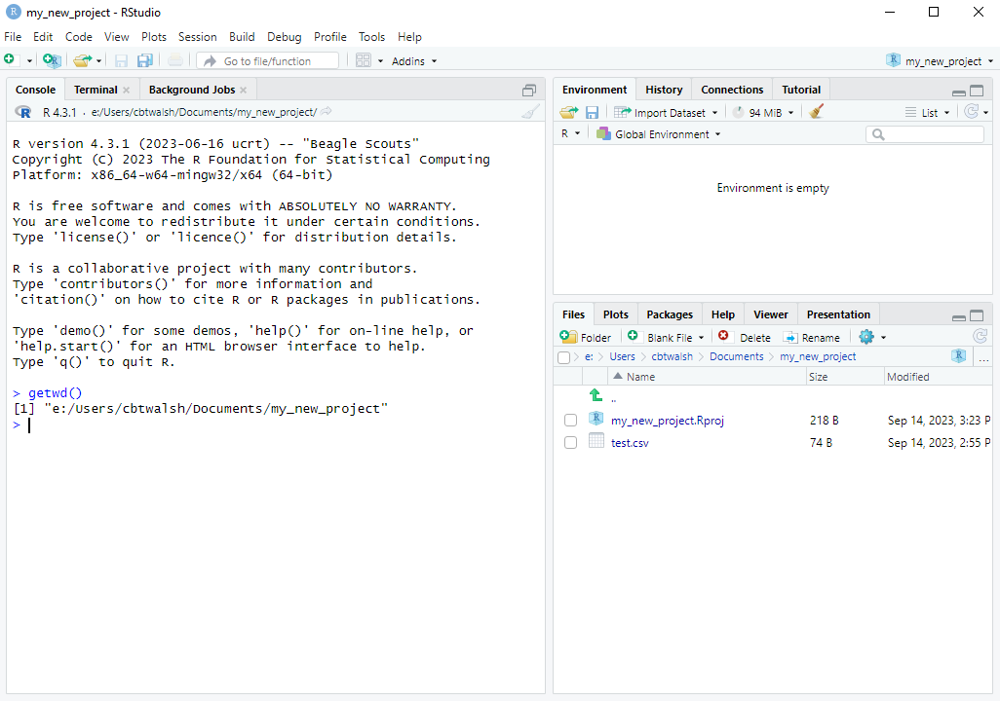

travel_mode,time
train,25
train,20
walk,15
cycle,10
walk,17
train,308 Loading a CSV Dataset
Up to now we have been creating vectors and dataframes in R by hand. But usually we will be working with bigger datasets that we want to read into R from a file. R is able to read files from many different formats, such as text files and Excel files. It can also read in datasets created by other software, such as Stata, SPSS, or SAS. It can also read datasets from straight from websites by providing the URL instead of the file name.
We will start by learning how to read in a comma-separated values (CSV) dataset from a CSV file. This is the most common format for datasets.
8.1 Structure of a CSV file
Before learning how to read a CSV file into R, let’s first understand the structure of a CSV file.
We will do this with the example data.frame we saw before about how long it took people to travel to class. The dataset can be represented by the following table:
| travel_mode | time |
|---|---|
| train | 25 |
| train | 20 |
| walk | 15 |
| cycle | 10 |
| walk | 17 |
| train | 30 |
A CSV file containing this dataset would look like this:
In a CSV dataset, the first row includes the names of the variables. Each of the names are separated by commas, hence the name “comma-separated values”. So the first line is travel_model,time. The second and following rows contain the values of each of the variables, again separated by commas. Each line needs to have the same number of commas so that the data can be read in as rectangular.
Commas as Part of Character Variables
Sometimes the values of the variables contain commas. For example, a travel mode could be "train,cycle" if someone both cycled and took the train. If we put in a line like train,cycle,28 in the CSV file, it would think that there are 3 data points for that line, when there should be only 2. In order to distinguish when the comma is part of the data and when it separates columns, we can put the character variables in double quotation marks. So we could more safely store the dataset instead as follows:
"travel_mode","time"
"train",25
"train",20
"walk",15
"cycle",10
"walk",17
"train",30Decimal Commas in CSV Files
Outside the Anglosphere (e.g. USA, UK, etc.), such as in the Netherlands, the decimal separator is a comma instead of a point. For example, “two and a half” is represented by 2,5 instead of 2.5. In this case we have two options:
- We can surround all the numbers by double quotation marks.
- We can use semicolons (
;) to separate columns instead of commas, and inform R that we want to use semicolons as separators instead of commas.
For assignments and exams, however, we will always be dealing with datasets with period decimal separators.
8.2 Reading in a CSV file
We will learn how to read in the example dataset above from a file. To do so, you need to first do the following steps to save it:
- Copy the text of the CSV file above using the clipboard icon.
- Open a new text file with
File\rightarrowNew File\rightarrowText File. - Paste in the contents of your clipboard so the file has the data in it.
- Go to
File\rightarrowSave As...and save the file astest.csvsomewhere on your computer.
Alternatively, download the file here. The variable names and meanings are:
Now, to read in the file into R, we need to tell R exactly where on your computer the file is. We need to give R either the absolute path (or full path) to the file, or the relative path.
8.2.1 Absolute Paths
The absolute path is the full path to the file. On Windows the full path is something like C:\Users\username\Documents\test.csv. On a Mac, the full path is something like Users/username/Documents/test.csv.
There are many different ways you can find the full path of your file, but the most convenient way for our purposes is to use the file.choose() command. When you run the file.choose() command in your console, a file browser will appear:
file.choose() commandYou then navigate to the file on your computer and press “Open”.
After doing so, the full path of the file will print in the console surrounded by quotes:
file.choose() commandWe can then copy this (leaving out the [1]) and paste it into the read.csv() command like this:
df <- read.csv("e:\\Users\\cbtwalsh\\Documents\\test.csv")Running this will read in the file into a data.frame called df. We will then be able to see df in our Environment and can view it by clicking on it there, or else typing View(df) in the console.
Technical note: Windows users will notice that the file path used in the read.csv() command uses “double backslashes” (\\) instead of single backslashes that you would normally see in a file path. We need to use these double backslashes in R because R uses the single backslash as an “escape character”. To create a single actual backslash in R we always need to use two backslashes. This is another reason why using the file.choose() command to get the file path is so useful. Otherwise we would have to add in all the extra backslashes in manually. It’s also possible to use forward slashes (/) instead, in which case we only need to use one. For example: "e:/Users/cbtwalsh/Documents/test.csv".
8.2.2 Relative Paths
Reading in a file using the absolute path like above works well until you start collaborating on a project with someone. Because you don’t have the same username, the code that you write won’t work on their computer because the file paths will be different. If two people are working on an R script together on Dropbox, they will have to constantly change the the lines in the R scripts that read in data.
A solution to this is to use relative paths for reading in data, or better yet, projects in RStudio (see below).
At any given time, R has a current working directory which is a folder somewhere on your computer. You can find out where this is using the getwd() command. If the file test.csv is in the current working directory, you can read it in without using the full path:
df <- read.csv("test.csv")One way to change the current working directory to the location where you have saved your data is to use the setwd() command. You can use the file.choose() command like before to navigate to where that is. You would then copy the full file path except for the part containing the file name. In the example above, you would do the following:
setwd("e:\\Users\\cbtwalsh\\Documents\\")
df <- read.csv("test.csv")This way, the collaborators would only need to set the current working directory once, and then the read.csv() commands wouldn’t need to be changed. This is useful when commands like this are run several times.
Suppose the dataset wasn’t in e:\Users\cbtwalsh\Documents, but rather e:\Users\cbtwalsh\Documents\datasets, a sub-folder of the Documents folder. We can still read in the file when the current directory is "e:\\Users\\cbtwalsh\\Documents\\" by using the relative path. That is, we only need to give the path relative to the current working directory. In this case, it would be "datasets/test.csv". Thus we could read in the data with:
setwd("e:\\Users\\cbtwalsh\\Documents\\")
df <- read.csv("datasets/test.csv")8.2.3 RStudio Projects
If you are collaborating with someone, setting the current working directory in the way above still requires changing a line when you run it on a different computer, which is inconvenient. A way that avoids this entirely is the Project feature in RStudio.
8.2.3.1 Creating an RStudio Projects
To make use of this feature, we first need to create a project. The easiest way to do this is to first ensure that the folder that you want to be the project already exists somewhere on your computer. You can go to File \rightarrow New Project... (or click the Project toolbar button) select “Existing Directory” and then browse to the location on your computer where it is. Then click “Create Project” and R will switch to the project.
Here are screenshots of the steps:
R then switches to the project. We can see that:
- The Files tab now shows the files from the project folder.
- RStudio creates a file called
my_new_project.Rprojin your project folder. - We can also see that R has switched its current working directory to the project folder. We can check this with the
getwd()command:

getwd()8.2.3.2 Reading in Data within an R Project
To read in a file in the project directory, such as test.csv, all we need to do is this:
df <- read.csv("test.csv")This way, we don’t need to find and paste in the full file path, we don’t need to change the working directory, and if we are collaborating with someone we don’t ever need to change any of the lines. There are also a number of other (more advanced) benefits from using the Projects feature. For these reasons, I recommend always using the Project feature in RStudio.